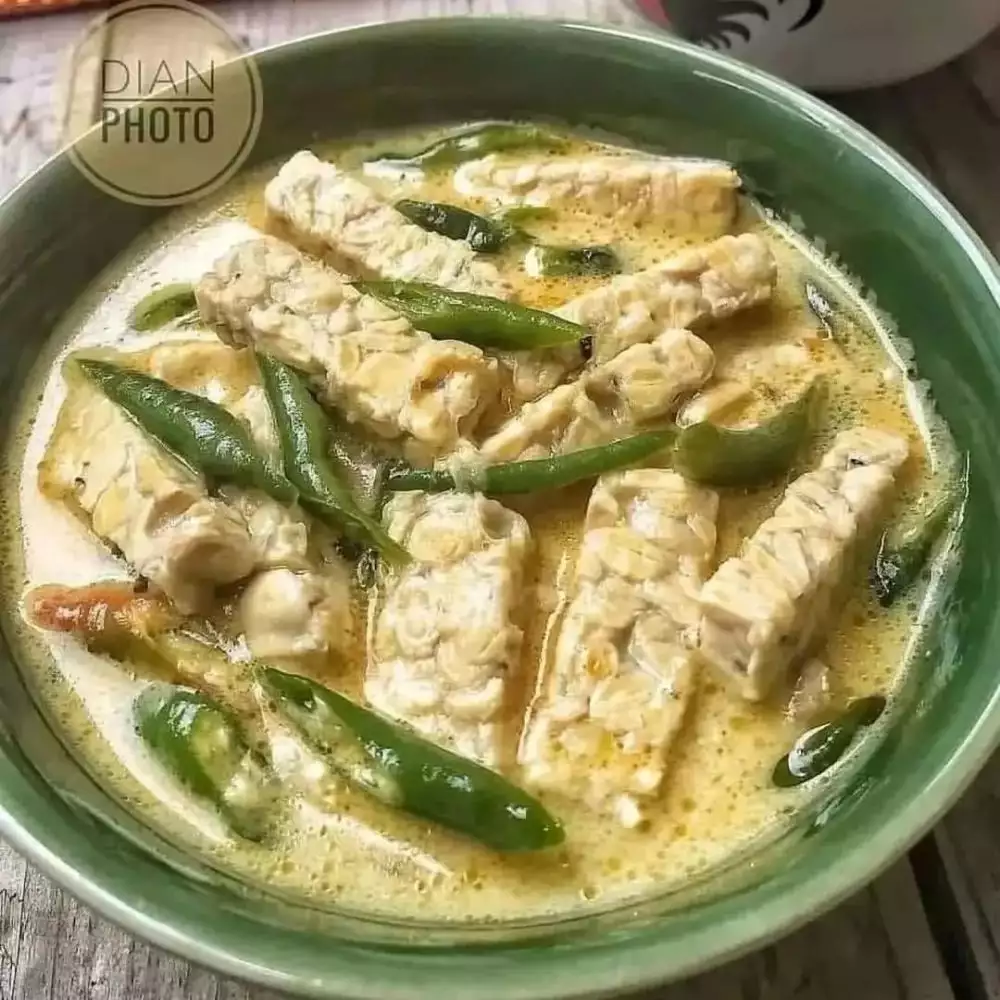

Sayur Lombok

Bahan
- 1 papan tempe, potong-potong
- 10 buah cabai hijau keriting, iris
- 1 sdm udang rebon
- 1 ruas lengkuas, geprek
- 2 lembar daun salam
- 3 butir bawang merah, haluskan
- 2 siung bawang putih, haluskan
- 2 butir kemiri, haluskan
- 1 sdt gula merah
- Garam dan merica secukupnya
- 1 sachet santan instan ukuran kecil
Cara Membuat
- Panaskan sedikit minyak. Tumis bumbu-bumbu sampai harum.
- Rebus air kira-kira 500 ml atau secukupnya. Masukkan bumbu yang sudah ditumis, tempe dan semua bahan lainnya. Masak selama 30 menit. Koreksi rasa, dan sajikan.